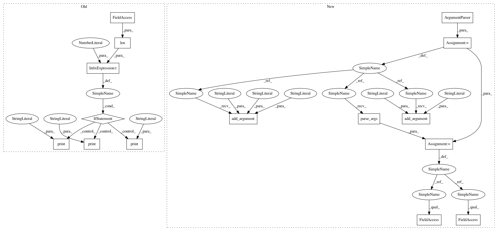

5ce56ff7e7f0c085bdff9745471c50aa4d0e1faa,precise/stream.py,,main,#,78
Before Change
stdout = sys.stdout
sys.stdout = sys.stderr
if sys.stdin.isatty() or len(sys.argv) > 3 or len(sys.argv) == 1 or (len(sys.argv) == 3 and not sys.argv[2].isdigit()):
print("Usage:", sys.argv[0], "MODEL_NAME [CHUNK_SIZE] < audio.wav")
print(" stdin should be a stream of raw int16 audio,")
print(" written in groups of CHUNK_SIZE samples.")
print()
print(" If no CHUNK_SIZE is given it will read until EOF.")
print()
print(" For every chunk, an inference will be given")
print(" via stdout as a float string, one per line")
sys.exit(1)
global tf
import tensorflow
tf = tensorflow
After Change
stdout = sys.stdout
sys.stdout = sys.stderr
parser = ArgumentParser(description=
"stdin should be a stream of raw int16 audio,"
"written in groups of CHUNK_SIZE samples."
"If no CHUNK_SIZE is given it will read until EOF."
"For every chunk, an inference will be given"
"via stdout as a float string, one per line")
parser.add_argument("-v", "--version", action="version", version=__version__)
parser.add_argument("model_name")
parser.add_argument("chunk_size", type=int, nargs="?", default=-1)
parser.usage = parser.format_usage().strip().replace("usage: ", "") + " < audio.wav"
args = parser.parse_args()
if sys.stdin.isatty():
parser.error("Please pipe audio via stdin using < audio.wav")
global tf
import tensorflow
tf = tensorflow
listener = Listener(args.model_name, args.chunk_size)
try:
while True:
In pattern: SUPERPATTERN
Frequency: 3
Non-data size: 15
Instances
Project Name: MycroftAI/mycroft-precise
Commit Name: 5ce56ff7e7f0c085bdff9745471c50aa4d0e1faa
Time: 2017-11-03
Author: matthew3311999@gmail.com
File Name: precise/stream.py
Class Name:
Method Name: main
Project Name: pyinstaller/pyinstaller
Commit Name: 2bb844445fc39ea4062164df027280516cd281a2
Time: 2015-10-20
Author: h.goebel@crazy-compilers.com
File Name: PyInstaller/utils/cliutils/grab_version.py
Class Name:
Method Name: run
Project Name: MycroftAI/mycroft-precise
Commit Name: 5ce56ff7e7f0c085bdff9745471c50aa4d0e1faa
Time: 2017-11-03
Author: matthew3311999@gmail.com
File Name: precise/stream.py
Class Name:
Method Name: main
Project Name: pyinstaller/pyinstaller
Commit Name: c2b11cd70fc5a9f64750e80845990cc715cb3d12
Time: 2015-10-20
Author: h.goebel@crazy-compilers.com
File Name: PyInstaller/utils/cliutils/set_version.py
Class Name:
Method Name: run